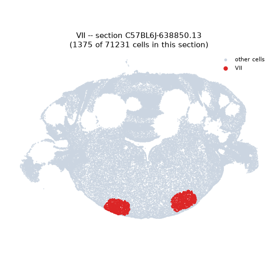
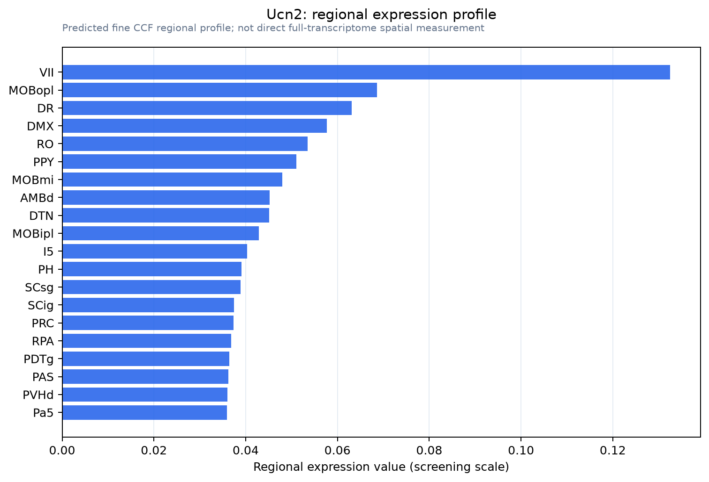

Ucn2
Spatial tier: STRICT_EXCLUSIVE · Class: OTHER · Top region: VII (Facial motor nucleus) · Positive regions: 10/554
44.0Discovery Score
33.6Targetability Score
CEvidence grade C
What this means: Ucn2: predicted fine-region profile is strict-exclusive, with 10 positive regions out of 554 (limit 12); direct spatial validation is required.
Function in VII: evidence, prediction, innovation
- Gene function
- Ucn2 encodes urocortin-2 (stresscopin-related peptide), a 38-amino-acid member of the corticotropin-releasing factor (CRF) family. Unlike CRF it binds selectively to CRF-R2 with essentially no CRF-R1 activity, signalling through Gs and cAMP, and acts in autonomic, appetitive and peripheral (cardiac, skeletal muscle) CRF-R2 pathways.
- Region function
- The facial motor nucleus (VII) supplies the muscles of facial expression and the mystacial pad, generating whisking and facial reflexes under brainstem and cortical premotor control.
- Published in this region
- inferred No region-specific literature found. Closest: Ucn2 mRNA was mapped to discrete CNS sites including hypothalamic paraventricular and arcuate nuclei and locus coeruleus (Reyes et al. 2001), while peripherally it is abundant in skeletal muscle (Chen et al. 2004) and critically supports motor axon terminal regeneration at the neuromuscular junction (D'Este et al. 2022).
- Predicted function
- Prediction: in the facial nucleus Ucn2 would act as a locally released CRF-R2 agonist giving cAMP-dependent trophic support and slow excitability modulation of cholinergic motoneurons, supporting resilience and reinnervation after nerve injury. Knockout or astressin2-B blockade should spare baseline whisking but slow recovery after facial nerve crush; exogenous urocortin-2 should accelerate reinnervation.
- Innovation
- ★★★★☆ 4/5 Urocortin-2 is well characterised in periphery and hypothalamus but never studied in brainstem motor nuclei.
- Tools
- Ucn2-deficient mice; CRF-R2 antagonists astressin2-B and antisauvagine-30; recombinant urocortin-2; Crhr2 reporter/Cre lines; ChAT-IRES-Cre (JAX 006410); facial nerve crush assay.
- References
Direct evidence located at the region
No Allen ISH section could be located at this region's centroid for the recorded experiments.
Look it up yourself: Allen Mouse Brain ISH for Ucn2Allen reference atlas: VII (structure 661)ABC Atlas MERFISH viewer(in the ABC Atlas choose dataset MERFISH-C57BL6J-638850-CCF, colour cells by gene "Ucn2" or by parcellation_substructure "VII")All genes confined to VII + 3-D brain
Direct spatial evidence
MERFISH REGION LOCATOR

Regional expression figure

Predicted WMB × fine-CCF profile; not direct full-transcriptome spatial measurement.
Spatial profile
Evidence and specificity
- Evidence status
- PREDICTED_FINE
- Direct sources
- None; predicted localization only
- Exclusive threshold
- 12 positive regions out of 554
- Spatial specificity
- 0.296
- Top-region fraction
- 0.085
- Filter status
- PASS
Interpretation limits
- Cell-type-to-region projection is imputed expression, not direct spatial measurement.
- Adult reference atlases do not establish stability across age, sex, strain, state, or disease.
- Transcript abundance does not guarantee protein abundance or genetic-tool performance.